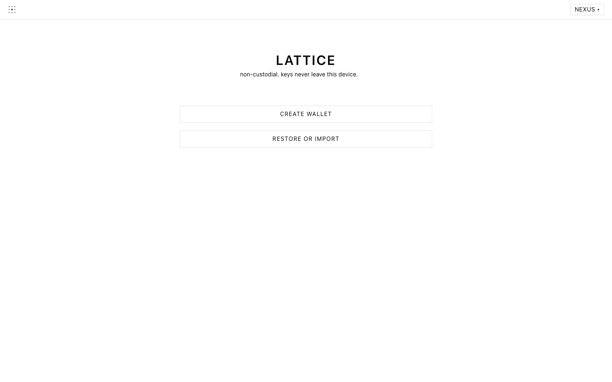

Send with a clear view.
Check the recipient, amount and fee before you approve a transfer. Copy your address when you want to receive.
OPEN-SOURCE WALLET · DESKTOP CHROME
You review it. You approve it.
Selfhold is a wallet for Lattice, a blockchain network that records transactions. Get an address to receive funds, and check the recipient, amount and fee before you send. The keys that authorize payments stay on your device.
Available on desktop Chrome as Lattice Wallet.
Selfhold is the new name, coming in a future update. About the name
 Your keys stay on your device.
Your keys stay on your device.01 / WHY SELFHOLD
Lattice is the network; Selfhold is your way to use it. Manage accounts on its main chain, Nexus, and connected child chains from one wallet. Choose it when you want to send and receive on Lattice while holding your own keys.
Check the recipient, amount and fee before you approve a transfer. Copy your address when you want to receive.
Your keys authorize payments. The wallet encrypts them on your device instead of placing them in a publisher-held account.
A node is your connection to Lattice. Choose a hosted service to begin, or connect to a node you run yourself.
WHAT “SELF-CUSTODY” MEANS
Self-custody means you control the keys that allow your wallet to spend. Selfhold does not hold them for you or reset them if they are lost.
Your recovery phrase is a set of words used to restore access to accounts created from it. Keep it offline, somewhere private. Never enter it on this website or share it with support.
Learn how to get started02 / INSIDE THE WALLET
Create a wallet if you’re starting fresh. Choose restore or import if you already have one. Then select your connection to Lattice.
Actual wallet welcome screen from the existing Lattice Wallet branding. The Selfhold name and mark are part of the upcoming update.

03 / LOOK FOR YOURSELF
Understand how the wallet works before you use it. These are things you can check in the project’s own documentation.
The wallet’s source and build instructions are public under the MIT license. Anyone can inspect the implementation.
Explore the wallet sourceNo publisher analytics. Your chosen node still receives network requests, and blockchain transactions may be public.
Read the wallet privacy policyLocal signing is one part of security. Your device, backups and chosen node matter too. Open code is not an independent audit.
Read the security policy04 / GET STARTED
Start on a computer with Chrome. Before adding funds, make sure you have a private backup and know how to restore it.
Open the existing Chrome Web Store listing on desktop Chrome. It currently uses the Lattice Wallet name. Review its permissions before installing.
Create a wallet and choose a password, or import an existing wallet. Store your recovery phrase offline and never share it with anyone, including support.
Select your chain and a hosted or personal node. Check the full recipient address, amount and fee before your first send. Confirmation depends on the network and node operators.
05 / QUESTIONS
Lattice is a blockchain network with a main chain called Nexus and connected child chains. Selfhold is a wallet for that network: it holds your keys and lets you send and receive on Lattice. Learn about Lattice.
Yes. Selfhold is the new name for Lattice Wallet and uses the same Chrome Web Store item. The live listing is still Lattice Wallet 0.3.1. The Selfhold update is not available yet. Version 0.4.1 is an uploaded draft awaiting final submission, not yet live or pending review. The current source documentation describes this upcoming version; some capabilities may differ from the live listing.
Restoring access requires your recovery phrase or a suitable wallet backup. Support cannot reset your keys. An encrypted backup also needs its password. Imported private keys and local transaction recovery records need their own backup coverage; a recovery phrase alone does not restore everything.
This website describes a Chrome extension for desktop use on Lattice. It does not promise a mobile app or support for other blockchain networks.
Node requests can disclose your IP address, selected chain, queried addresses and transaction identifiers. Approved transactions go to the selected node and may become public blockchain records. Read the wallet privacy policy for the details.
Yes. The wallet is available under the MIT license. You can read the source and build instructions. Open source makes inspection possible; it is not a guarantee of safety or an independent audit.
Contact support@lattice.build or open a GitHub issue. For vulnerabilities, follow the security reporting instructions. Never send recovery phrases, private keys, passwords or unredacted backups.
SELF-CUSTODY. BY CHOICE.
Desktop Chrome · Currently listed as Lattice Wallet.